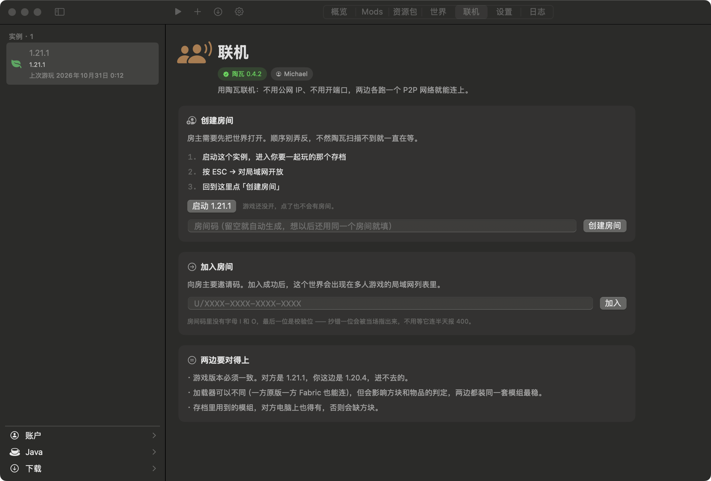

压缩包解压由本软件自行实现。
直接调用系统自带的 libz 完成 inflate 解压，代码约两百行。因此无需引入第三方依赖——依赖之间可能产生冲突，亦可能于系统更新后悄然失效且难以追溯，本方案从源头规避了这类风险，行为在任何 Mac 上都可预期。

为什么是原生
直接调用系统自带的 libz 完成 inflate 解压，代码约两百行。因此无需引入第三方依赖——依赖之间可能产生冲突，亦可能于系统更新后悄然失效且难以追溯，本方案从源头规避了这类风险，行为在任何 Mac 上都可预期。
依据版本 JSON 中声明的版本要求在本机检索对应运行时，例如要求 21 即查找 21。若未找到，方才回退至 22，并在界面明确提示「本机没有正好 Java 21 的运行时，改用 Java 22」。一切替换均对用户透明，不会静默变更。
版本 JSON 不匹配即重新下载，依赖库缺失即自动补齐，缓存损坏即丢弃重建。这些恢复动作均在后台完成，用户只需点击启动，即可直接进入游戏。
安装、配置、启动与日志留存——四项基础能力，均已打磨到位。
侧边栏、标签页与工具栏均采用系统原生控件。切换深色模式、进入全屏、分屏或调整系统字号时，界面会随之同步更新—— 因其本身即 AppKit 的一部分，而非叠加于网页之上的渲染层。
运行时、字体与浏览器内核均未打包。下载完成后拖入「应用程序」文件夹，双击即可运行。
自 Alpha 时代起的版本均可安装。加载器安装完成后，仍可在版本、类型之间切换，或退回原版，存档无需迁移。
依据版本 JSON 中的要求检索，并读取 JVM 自行上报的 java.home。即便是 Homebrew 形式的符号链接亦无法干扰识别结果。
saves、mods、resourcepacks 目录与官方启动器完全一致。如需更换启动器，官方启动器或 HMCL 均可直接接管，存档无需迁移。
内置陶瓦联机。房主将世界开放为局域网后，点击创建房间并分享邀请码即可 —— 无需公网 IP，亦无需在路由器上开放端口。
来自 CurseForge 与 Modrinth 的整合包可直接导入：自动安装 NeoForge，并依据国内镜像补齐缺失的 mod，存档一并迁入。亦可导出为 .mrpack 分享给好友。
stdout 与 stderr 均完整写入日志，连实际执行的命令行本身亦一并保留。运行结果可查，无需猜测。
Java、依赖库与资源索引的缺失项及数量，均直接呈现在卡片中。
新建实例、实例设置与联机界面。均为真实截图，未经重绘，光标亦未作处理。



工程细节
截图难以呈现，使用体验中却能感知。以下为开发过程中切实处理过的几处关键细节。
直接调用系统自带的 libz 完成 inflate 解压，额外编写约两百行代码，从而无需任何第三方依赖包——无论部署于哪台 Mac，行为表现均保持一致。
系统代理与直连并发，官方源与国内镜像并发。率先响应的链路即被采用。在一台系统 PAC 解析异常的机器上，URLSession 单次请求曾耗时 21 秒；引入四路竞速后降至 0.7 秒。
版本 JSON 直接落盘，不做 decode 再 encode。曾尝试经 Codable 往返，结果枚举编码后的结构发生变化，自身已无法读回，官方启动器与 HMCL 更无法识别。现保持字节级不变。
1.19 之后，natives 转为带 classifier 的普通库，直接挂载于 classpath，由 LWJGL 自行抽取 dylib。早期曾作多余的解压处理，后确认官方启动器并无此步骤。
支持 Macl
不含广告与内购，亦不会上传用户的账户或游戏数据。唯一涉及费用之处为 Apple 开发者账号（$99/年）—— 完成认证后，安装包即可获得公证，首次打开无需再次右键「打开」。
如您愿意支持项目发展，可通过爱发电进行赞助。赞助与否均不影响任何功能。